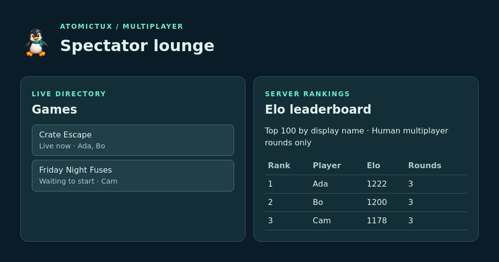

Read the maze
Blast through crates to find a route or a pickup. Walls stop ordinary blasts, but an atomic bomb burns across its entire row and column.
Bomb arena / Android + desktop
Drop a bomb. Slip around a corner. Grab the power-up before your friends do. In AtomicTux, the last penguin standing wins.
Install & play
01 / Inside the arena
Blast through crates to find a route or a pickup. Walls stop ordinary blasts, but an atomic bomb burns across its entire row and column.

Pick one to three bots, set their strength, and tune the six power-up drops. Want a breather? Choose Demo to watch four bots play.
02 / Multiplayer

Choose Multi Player in the game to create a room or join friends. Bots fill the empty seats.
Open the game server’s HTTPS address in a browser. Pick a waiting room or a live round, enable sound, and check the server’s Elo leaderboard between games.
Multiplayer & spectator guide →